Weapons
All vanilla weapons have had some serious rebalancing to put them more in line with the balance in the official Quake Champions. Weapon firing rates are the same as vanilla Quake 1, except where otherwise specified.
The weapons added by Scourge of Armagon remain untouched.
New Items
Melee |
Heavy Machine Gun |
Shotgun / Super Shotgun |
Nailgun / Super Nailgun
Grenade Launcher / Rocket Launcher |
Lightning Gun |
Railgun
Proximity Launcher |
Laser Cannon
Melee
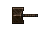
No longer only an axe, many Champions now wield a unique melee weapon that is all their own.
Most however will use the familiar Gauntlet from Quake III Arena. The differences are purely cosmetic in most cases.
| Old Damage | New Damage |
| 20 | 70 |
Heavy Machine Gun
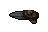
Added by Quake Champions Classic, the Heavy Machine Gun is a rapid fire hitscan weapon,
originating in Quake III Arena (technically the heavy variant premiered in Quake Live).
The Heavy Machine Gun replaces the Nailgun pickups in all maps, allowing it to be used across the entire game.
Grunt backpacks now drop 10 bullets. If a map doesn't contain bullet boxes, some shotgun shell boxes will also yield a little bullet ammo.
| Damage | Cooldown | Ammo Type | Ammo Limit |
| 9 | 0.1 seconds | Bullets | 150 |
Shotgun / Super Shotgun
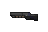 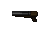
Both shotguns have gotten a significant boost in their damage output, now being extremely useful in close range.
While you can still technically snipe with them, the lower ammo limits do encourage you to get up close and personal with them instead.
The starting Shotgun is replaced by the Super Shotgun once it is picked up. The Super Shotgun now only consumes 1 shell per shot.
| Weapon | Old Damage | New Damage | Old Ammo Limit | New Ammo Limit |
| Shotgun | 24 (6 pellets) | 40 (10 pellets) | 100 | 25 |
| Super Shotgun | 56 (14 pellets) | 120 (30 pellets) |
Nailgun / Super Nailgun
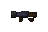 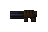
Nails now deal radius damage, making them more dangerous not only for your enemies but also for you.
More enterprising players can attempt to nail jump with the new change. The radius damage may seem high
but due to the way Quake measures radius distance the actual damage inflicted ends up being a little lower than direct damage.
The Nailgun is now a starting weapon, though you currently need to pick up some ammo for it before you can use it.
The Super Nailgun replaces the Nailgun once picked up, and now only consumes 1 nail per shot.
| Weapon | Old Damage | New Damage | Radius Damage | Old Ammo Limit | New Ammo Limit |
| Nailgun | 9 | 12 | 20 | 200 | 150 |
| Super Nailgun | 18 | 18 | 37 |
Grenade Launcher / Rocket Launcher
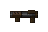 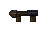
Grenades will now deal direct damage in addition to splash damage, operating nearly identically to Rockets.
Rockets no longer add a random amount of damage to direct hits.
| Weapon | Old Direct Damage | New Direct Damage | Radius Damage | Old Ammo Limit | New Ammo Limit |
| Grenade Launcher | 0 | 100 | 120 | 100 | 25 |
| Rocket Launcher | 100 + rand*20 | 100 | 120 |
Lightning Gun
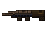
The lightning beam bug has been fixed, so the LG will now fire only in the direction you aim. Sorry, speedrunners,
but there are plenty of other ways to break the game in this mod! The Lightning Gun is no longer the power house of the cell,
but it still remains a valuable part of a Champion's arsenal.
| Old Damage | New Damage | Old Ammo Limit | New Ammo Limit |
| 30 per bolt | 13 per bolt | 100 | 150 |
Railgun
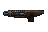
Added by Quake Champions Classic, the Railgun is a slow but high damage hitscan rifle.
The Railgun will spawn in each episode of the original campaign, as well as all of the original multiplayer maps.
In the event that a map has no Railgun and more than one Rocket Launcher, the second Rocket Launcher will turn into a Railgun.
| Damage | Cooldown | Ammo Type | Ammo Limit |
| 90 | 1.5 seconds | Uranium Slugs | 10 |
Proximity Mine Launcher
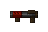
A weapon originating from Scourge of Armagon, it fires mines that explode after a short time or if an entity gets close.
It can be swapped to by either scrolling or by using Impulse 36.
| Radius Damage | Old Ammo Limit | New Ammo Limit |
| 95 | 100 | 25 |
Laser Cannon
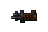
A weapon originating from Scourge of Armagon, it fires lasers that decrease in power by 10% every time they hit a surface.
It can be switched to by either scrolling or by using Impulse 37.
In the Remaster, it can also be switched to using the Weapon Wheel. No changes have been made directly to the Laser Cannon.
| Max Damage | Min Damage | Cooldown | Old Ammo Limit | New Ammo Limit |
| 18 | 13 | 0.1 | 100 | 150 |